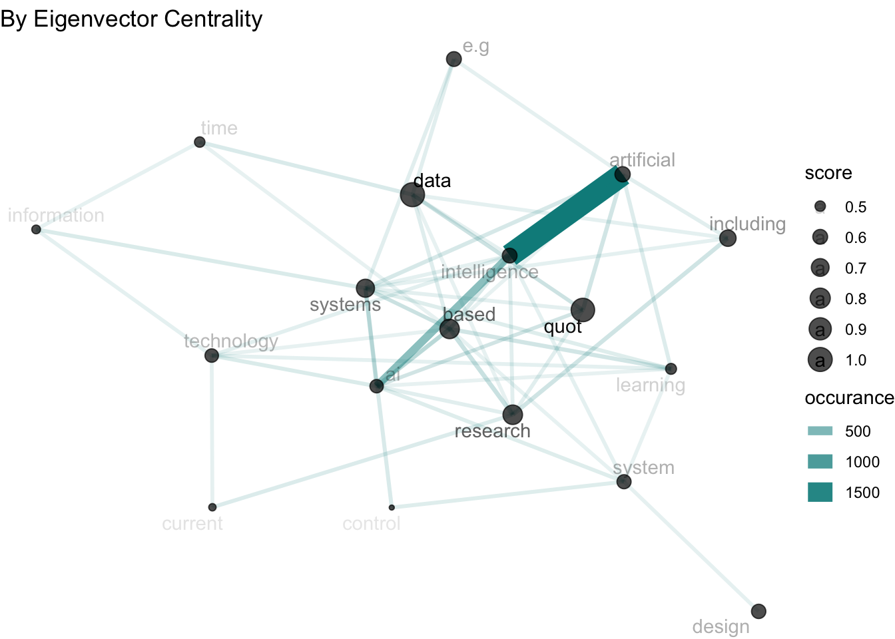
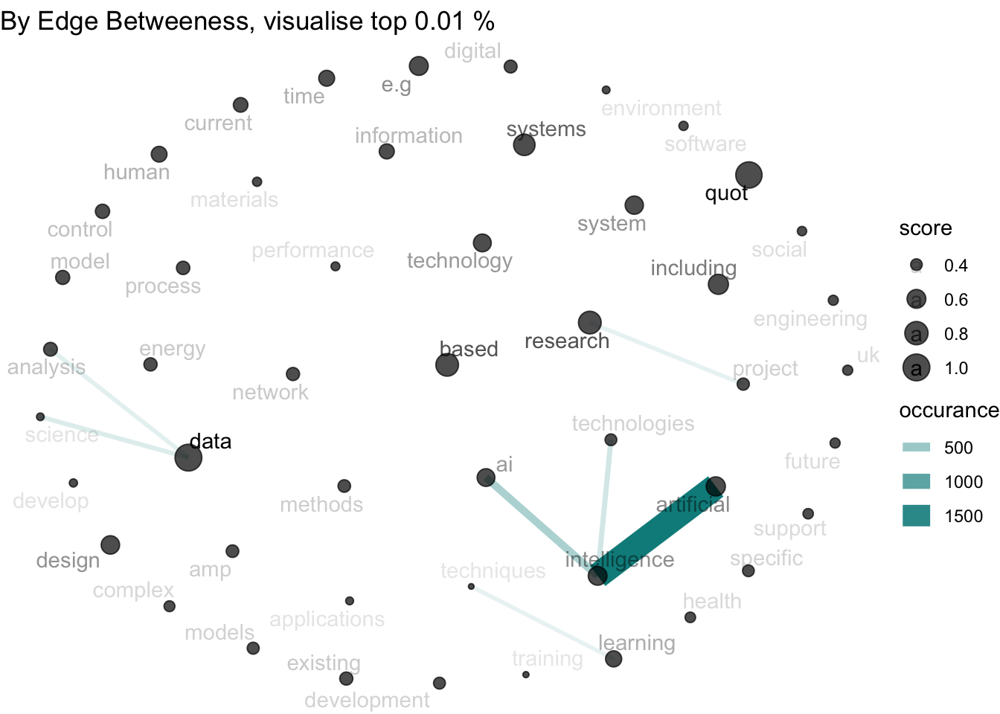

Code
library(tidyverse)
library(tidygraph)
library(ggraph)
library(arrow)
library(igraph)
library(tidytext)gtr_desc = read_parquet("data/gtr.parquet") |>
select(id, abstractText)
gtr_meta = read_csv("data/projectsearch-1709481069771.csv") |>
mutate(across(ends_with("Date"), ~as.Date(.x,"%d/%m/%Y"))) |>
rename(id=ProjectId)
PARTIAL_PTTN='(/[1-9])$'
## waggle some columns for analytics
gtr_pj = gtr_meta |>
mutate(
is_partial = str_detect(ProjectReference, PARTIAL_PTTN),
project_ref = str_replace(ProjectReference,PARTIAL_PTTN,""),
part = str_extract(ProjectReference, PARTIAL_PTTN) |>
str_extract("\\d+") |>
as.numeric() |>
coalesce(0)
) |>
# filter(is_partial) |>
group_by(project_ref) |>
mutate(occurance = n()) |>
ungroup() |>
dplyr::relocate(ProjectReference, FundingOrgName, LeadROName, id,
is_partial,project_ref,part,occurance)
## early stop if this is no longer true
stopifnot(
"Project Reference is NOT Unique!"=length(unique(gtr_pj$ProjectReference)) == nrow(gtr_pj),
"Project Refrence contain NA!"=!any(is.na(gtr_pj$ProjectReference))
)
# gtr_pj |>
# group_by(occurance) |>
# summarise(n_projects=n())
## find out about
unique_prj = gtr_pj |>
relocate(ProjectReference, project_ref, id) |>
group_by(project_ref) |>
mutate(rn=row_number()) |>
filter(rn==1) |>
select(-rn) |>
ungroup()
## find out with text other than continuous project are repeated
repeated_text = gtr_desc |>
group_by(abstractText) |>
mutate(n=n()) |>
filter(n!=1) |>
arrange(abstractText)
## Take the repeated test one out for now.
analysis_prj = unique_prj |>
anti_join(repeated_text, by="id") |>
mutate(year = lubridate::year(StartDate)) |>
inner_join(gtr_desc, by="id")## break into bi-grame
abstract_words = analysis_prj |>
unnest_tokens(word, abstractText, "ngrams",n=2, drop=T) |>
count(word,id, sort=T)
## try this `bind_tf_idf` function
word_distinct = abstract_words |>
bind_tf_idf(word,id, n)
## convert bi-graph into network graph
pharases = word_distinct |>
arrange(desc(tf_idf)) |>
tidyr::separate(word, into=c("word1","word2"), sep=" ") |>
anti_join(stop_words,c("word1"="word")) |>
anti_join(stop_words, c("word2"="word")) |>
filter(if_all(c(word1,word2), ~!stringr::str_detect(.x, "\\d+"))) |>
mutate(pharase = paste(word1, word2)) |>
filter(!word1 |> str_detect("^_"))
require(tidygraph)
## try find graphical centroid of biggest graph
catch_pharase = pharases |>
group_by(word1, word2) |>
summarise(
occurance = n()
) |> arrange(-occurance)`summarise()` has grouped output by 'word1'. You can override using the
`.groups` argument.bi-graph truns out to be very useful. you gets to understand
Eigen Centrality Run every node through to
word_graph = catch_pharase |>
as_tbl_graph() |>
morph(to_components) |>
as_tibble() |>
mutate(dim = map_int(graph, ~length(.x))) |>
arrange(desc(dim))
biggest_g=word_graph |> purrr::pluck("graph",1)
## eigen centrality
centroid_score = biggest_g |> eigen_centrality() |> pluck("vector")
centroid = which(centroid_score==max(centroid_score))
biggest_g |>
convert(to_local_neighborhood, centroid, 1) |>
mutate(score = centroid_score[name]) |>
convert(to_subgraph, score > quantile(score, 0.99)) |>
activate(edges) |>
arrange(occurance) |>
filter(occurance > 10) |>
ggraph(layout="gem") +
geom_edge_link(aes(alpha=occurance,width=occurance),color="cyan4",trans="log") +
geom_node_point(aes(size=score),color='black',trans="sqrt",alpha=0.7) +
# geom_node_point(aes( alpha=score) ) +
geom_node_text(aes(label = name, alpha=score),repel=T) +
scale_edge_alpha(trans="sqrt") +
ggtitle("By Eigenvector Centrality") +
theme_void()Subsetting by nodesWarning in geom_edge_link(aes(alpha = occurance, width = occurance), color =
"cyan4", : Ignoring unknown parameters: `trans`Warning in geom_node_point(aes(size = score), color = "black", trans = "sqrt",
: Ignoring unknown parameters: `trans`Warning: The `trans` argument of `continuous_scale()` is deprecated as of ggplot2 3.5.0.
Please use the `transform` argument instead.
Anygraphical based algorithmn is interesting here.
## harmonic_centrality
cache_file = "cache/04-betweeness_score.RDS"
if(interactive()) {
betweeness_score = biggest_g |>
activate(edges) |>
betweenness(weights=E(biggest_g)$"occurance")
saveRDS(centroid_score, cache_file)
} else {
betweeness_score=readRDS(cache_file)
}
btw_centre = which(centroid_score==max(centroid_score))
biggest_g |>
# convert(to_local_neighborhood, btw_centre) |>
mutate(score = betweeness_score[name]) |>
convert(to_subgraph, score > quantile(score, 0.95)) |>
arrange(desc(score)) |>
filter(row_number() < 50) |>
activate(edges) |>
filter(occurance > 100) |>
ggraph("kk") +
geom_edge_link(aes(alpha=occurance,width=occurance),color="cyan4") +
geom_node_point(aes(size=score),color='black',trans="sqrt",alpha=0.7) +
# geom_node_point(aes( alpha=score) ) +
geom_node_text(aes(label = name, alpha=score),repel=T) +
scale_edge_alpha(trans="sqrt") +
theme_void() +
ggtitle("By Edge Betweeness, visualise top 0.01 % ")Subsetting by nodesWarning in geom_node_point(aes(size = score), color = "black", trans = "sqrt",
: Ignoring unknown parameters: `trans`
This results actually makes sense if you are looking at quot is a wild card that can get about a lot of things.
Up to interpretation.
Okay other then key terms. Seems like the edge betweeness is good for point out adjusant words rather than identify patterns.
It maybe usefull to use n-gram to extract combined terms from title and bind this back into abstract n-graph. Then when we look at graph centrality again we remove any waild card.
Pharases may high high frequency of occurance but this does not means that they have a higher graphic degree.
The better way is actually filter a few top occuring terms.
Warning in geom_edge_link(aes(alpha = occurance, width = occurance), trans =
"log", : Ignoring unknown parameters: `trans`